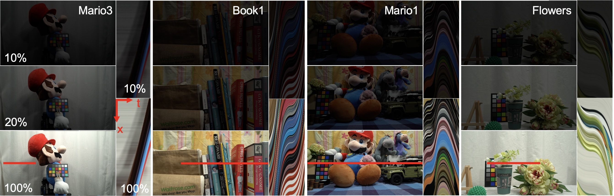
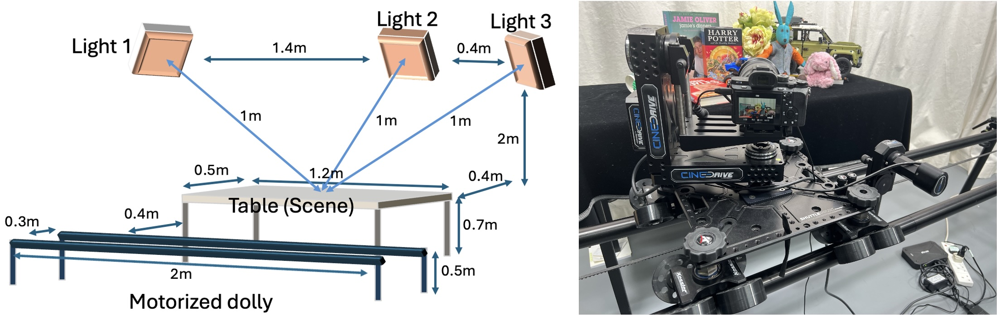
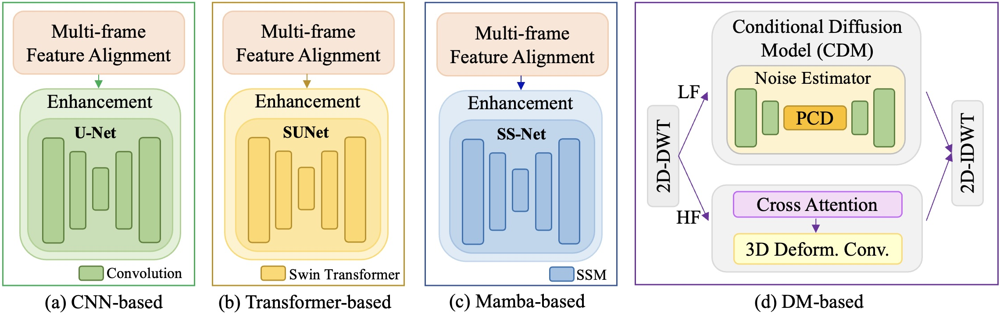
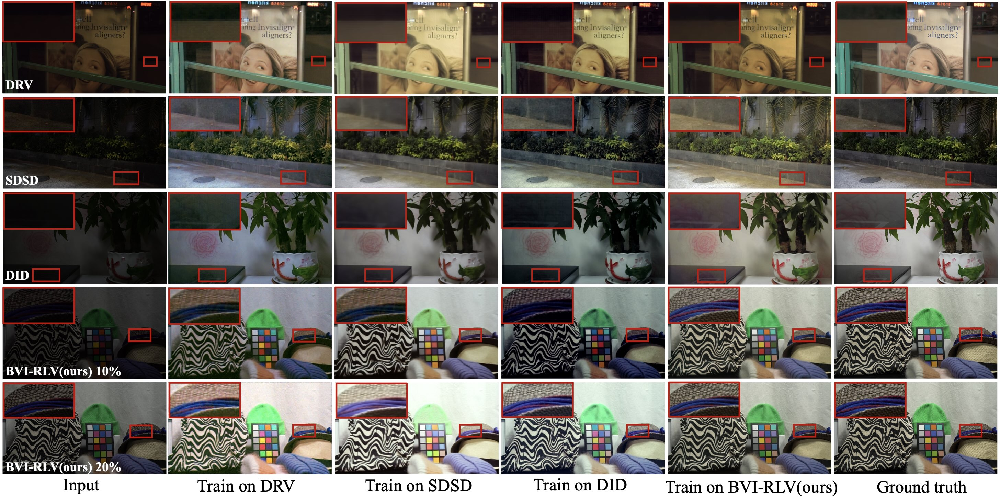
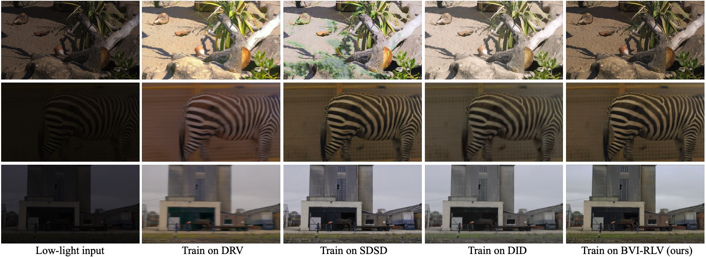
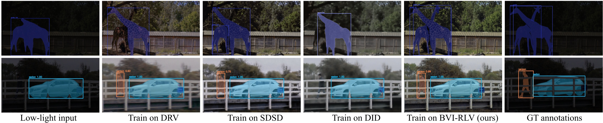

Low-light videos often exhibit spatiotemporally incoherent noise, compromising visibility and degrading performance in computer vision applications. A major challenge for enhancing such content using deep learning lies in the scarcity of pixel-aligned, high-quality training data. We introduce BVI-RLV, a fully registered low-light video dataset comprising over 30k paired frames from 40 diverse scenes under two low-light conditions, each aligned with normal-light ground truth.
Unlike existing datasets that rely on neutral density (ND) filters or suffer from misalignment issues, BVI-RLV achieves sub-pixel registration for 99.24% of data at full HD resolution across dynamic motion scenarios using a motorized dolly and image-based refinement. The dataset covers a wide range of motion types and realistic temporal noise. We also provide baseline implementations using four representative architectures: Convolutional Neural Network (CNN), Transformer, State Space Model (Mamba), and Diffusion Model (DM). Experiments demonstrate that registration is crucial for supervised learning, yielding up to 5.85 dB PSNR improvement compared to unregistered training. Models trained on BVI-RLV outperform those trained on existing datasets in cross-dataset evaluations, achieving superior performance even in real-world outdoor scenes.
BVI-RLV is captured under controlled studio lighting at 1920×1080 resolution and 25 fps. Video pairs are recorded under normal lighting (100%) and two low-light conditions (10% and 20% of normal intensity, approximately 3-5 lux and 10-14 lux). Scenes include both static backgrounds with moving objects and fully dynamic scenes captured with the camera mounted on a motorized dolly, covering linear, nonlinear, rotational, and angled motion trajectories. The verified alignment error is 0.256±0.451 pixels via normalized cross-correlation, with 99.24% of pairs achieving less than 1-pixel error.
Dataset acquisition was conducted in a dedicated studio for precise control of lighting and color temperature. Four Cineo MavX lights (up to 8,000 lumens each) were set to 6,500 K, with intensity calibrated by a Zero 88 FLX S24 light controller. To maximize accessibility, we used a consumer Sony Alpha 7SII with an FE 16-35mm F2.8 GM lens, recording in the lowest-compression XAVC S format (H.264, 8-bit, 1920×1080). ISO was fixed at 160 for normal light and 800 for low-light to avoid in-camera denoising. Videos were captured at 25 fps, 1/50 shutter, F6.3.
Scene motion was precisely controlled using a Kessler CineDrive shuttle dolly system, enabling horizontal translation and three-axis rotation. The programmable setup supports linear, rotational, and angled trajectories, representative of motion found in surveillance, robotics, and cinematography. Ground-truth references are obtained by a repetition-and-selection strategy: the dolly movement is repeated three to five times under normal lighting, and for each low-light frame the best-aligned reference is selected via histogram matching plus MAE minimization — preserving original low-light noise and motion blur without any warping or non-rigid registration.

| Dataset | Light | Dyn. | GT | Reg. precision | Motion type | Frames | Resolution | Avail. |
|---|---|---|---|---|---|---|---|---|
| DRV | Real | ✓ | ✗ | n/a | diverse (no GT) | 2.4k | 3672p | ✓ |
| SMOID | ND | ✓ | ✓ | frame-level | 1 type (pan) | 35.8k | 1000p | ✗ |
| RViDeNet | Real | stop-motion | ✓ | frame-level | discontinuous | 385 | 1080p | ✓ |
| LLRVD | Real | ✓ | ✓ | mostly aligned | screen-replay | — | 6336p | ✗ |
| SDSD | ND | ✓ | ✓ | partial | 1 type (linear) | 37.5k | 1080p | ✓ |
| DUS | Real | ✓ | ✗ | n/a | diverse (no GT) | 15k | 1280p | ✓ |
| DID | ND | ✓ | ✓ | partial | 1 type (pan) | 41.0k | 1440p | ✓ |
| BVI-RLV (Ours) | Real | ✓ | ✓ | sub-pixel | 4 types | 31.8k | 1080p | ✓ |
Light: Real lighting vs. Neutral-Density (ND) filter. Dyn.: dynamic content. GT: paired ground truth. Reg. precision: alignment quality.
We benchmark image-based methods (RIDNet, SwinIR), the GAN-based mo-CGAN, video-restoration EDVR, and prior LLVE methods (SMOID-Net, SDSD-Net), alongside our four standardized baselines based on CNN, Transformer, Mamba, and Conditional Diffusion Model (CDM) architectures. Each model is trained on each of four datasets (DRV, SDSD, DID, BVI-RLV) and evaluated on all four test sets. The reported values are the unweighted average across the four test sets.

Cross-dataset performance (PSNR ↑ / SSIM ↑ / LPIPS ↓)
Bold and underline denote the best and second-best per training dataset. Image-based methods are shown for reference.
| Method | Trained on DRV | Trained on SDSD | Trained on DID | Trained on BVI-RLV (Ours) |
|---|---|---|---|---|
| RIDNet | 18.43 / 0.678 / 0.340 | 18.15 / 0.675 / 0.345 | 20.88 / 0.762 / 0.237 | 19.69 / 0.756 / 0.261 |
| SwinIR | 15.22 / 0.707 / 0.421 | 11.00 / 0.436 / 0.533 | 11.58 / 0.588 / 0.410 | 17.54 / 0.733 / 0.348 |
| mo-CGAN | 15.84 / 0.456 / 0.380 | 14.25 / 0.431 / 0.481 | 15.87 / 0.512 / 0.377 | 17.41 / 0.557 / 0.302 |
| EDVR | 15.73 / 0.598 / 0.354 | 16.20 / 0.640 / 0.330 | 19.53 / 0.701 / 0.275 | 20.12 / 0.756 / 0.214 |
| SMOID-Net | 17.66 / 0.541 / 0.379 | 14.92 / 0.501 / 0.401 | 17.62 / 0.554 / 0.323 | 17.98 / 0.621 / 0.280 |
| SDSD-Net | 16.31 / 0.587 / 0.366 | 16.08 / 0.569 / 0.359 | 19.05 / 0.652 / 0.291 | 18.05 / 0.690 / 0.257 |
| CNN-based | 15.00 / 0.492 / 0.422 | 17.07 / 0.677 / 0.356 | 18.91 / 0.725 / 0.305 | 19.50 / 0.757 / 0.316 |
| Transformer-based | 14.19 / 0.424 / 0.424 | 16.93 / 0.608 / 0.475 | 19.61 / 0.714 / 0.385 | 20.64 / 0.765 / 0.243 |
| Mamba-based | 22.95 / 0.784 / 0.195 | 19.91 / 0.751 / 0.281 | 18.74 / 0.738 / 0.238 | 22.93 / 0.820 / 0.146 |
| DM-based | 19.56 / 0.575 / 0.350 | 21.00 / 0.746 / 0.292 | 19.44 / 0.683 / 0.199 | 22.20 / 0.773 / 0.175 |
Models trained on BVI-RLV consistently outperform those trained on DRV, SDSD, and DID across all test sets.

Although BVI-RLV is captured indoors, models trained on it generalize effectively to outdoor low-light scenes. We evaluate the DM-based baseline on the SDSD outdoor test set after training on different datasets.
DM-based model evaluated on SDSD outdoor scenes
Bold and underline denote the best and second-best performance.
| Trained with | PSNR ↑ | SSIM ↑ | LPIPS ↓ |
|---|---|---|---|
| DRV | 10.47 | 0.386 | 0.338 |
| DID | 20.37 | 0.609 | 0.237 |
| BVI-RLV (Ours) | 21.96 | 0.708 | 0.165 |

We further evaluate the usefulness of BVI-RLV-enhanced videos for high-level perception by running a frozen MinVIS model (ResNet-50 backbone pretrained on YouTube-VIS 2019) on the real low-light ELVIS-S benchmark. The Mamba-based enhancement model is trained on each dataset, and its enhanced frames are fed to the same VIS evaluator.
Video Instance Segmentation on ELVIS-S (frozen MinVIS)
Bold and underline denote the best and second-best performance.
| Trained with | Mask AP | Mask AR | |||
|---|---|---|---|---|---|
| AP | AP50 | AP75 | AR1 | AR10 | |
| Low-light input | 32.50 | 50.00 | 25.00 | 32.50 | 32.50 |
| DRV | 43.94 | 75.25 | 40.84 | 42.19 | 43.75 |
| SDSD | 46.70 | 90.10 | 32.92 | 37.19 | 50.62 |
| DID | 42.39 | 85.97 | 26.07 | 39.69 | 44.06 |
| BVI-RLV (Ours) | 51.98 | 96.78 | 34.53 | 43.12 | 56.25 |

@article{linbvirlv,
title = {BVI-RLV: A Fully Registered Dataset for Low-Light Video Enhancement},
author = {Lin, Ruirui and Huang, Guoxi and Lin, Joanne and Sun, Qi and Malyugina, Alexandra and Bull, David R. and Anantrasirichai, Nantheera},
journal = {arXiv:2407.03535},
year = {2026}
}